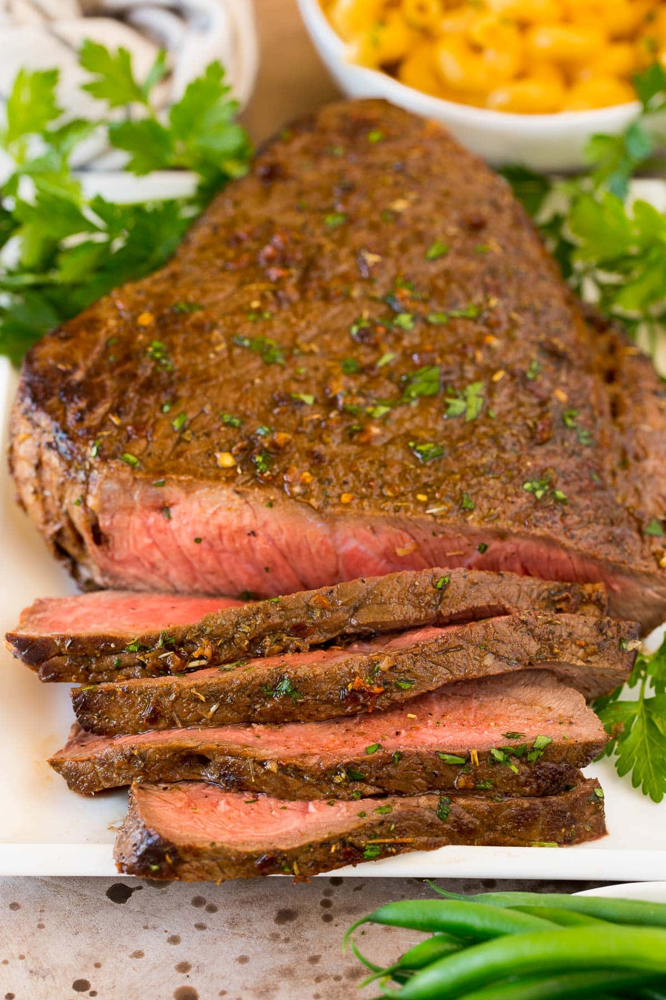

London Broil

Description
A crowd favorite, this easy meat-centric dish is a go-to when you need to feed a large crowd.
The recipe calls for a large beef top-round steak, which is generally a very reasonably priced
cut of beef perfect for families on a budget.
The meat is marinated in a combination of soy sauce and lemon pepper seasoning that gives it
a tangy, savory flavor that truly hits. You can serve with any sides you prefer. I like to
serve with pan-fried asparagus and a baked potato.
Ingredients
- Soy Suace
- Lemon Pepper seasoning
- Olive Oil
- Large Top Round Steak
Steps
- Pat steak dry with paper towel and season generously with Lemon pepper.
- Place in baking dish and pour soy sauce on top, enough to cover about 1 in
of the bottom of the pan.
- Marinate in fridge up to 24 hours, flipping the meat halfway through to ensure
both sides are coated evenly in soy sauce.
- Line baking pan with foil.
- Preheat oven to broil high.
- Broil for 5 minutes per side until seared
- Finish in a pan or on the grill on med low heat for 5 minutes per side
- Let rest for 5 minutes.
- Slice on cutting board diagonally in thin pieces and serve with your side of choice.